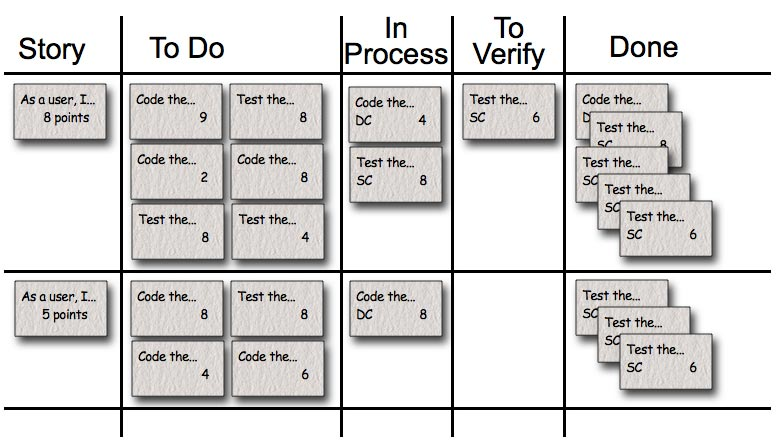

| Main Description |
The task board shows all the work the team is doing during a sprint. It is updated continuously throughout
the sprint–if someone thinks of a new task they write a new card and puts it on the board. Either during or
before The Daily Scrum, estimates are changed (up or down) and cards are moved around the
board.
The task board might look like this:

Each row on the task board is a product backlog item (in this particular example stories). During the sprint planning meeting the team selects the product backlog items they can complete
during the coming sprint. Each product backlog item is turned into multiple sprint backlog items.
Each of these is represented by one task card that is placed on the task board. Each task card starts on the task board
in the “To Do” column. The columns are:
-
Story–The story description (“As a user I want to…”) shown on that row.
-
To Do–This holds all the cards that are not done or in process.
-
Work In Process–Any card being worked on goes here. The programmer who chooses to work on it moves it over
when she’s ready to start the task. Often this happens during the Daily Scrum when someone says, “I’m going to work
on the boojum today.”
-
To Verify–A lot of tasks have corresponding test task cards. So, if there’s a “Code the boojum class” card
there is likely one or more task cards related to testing: “Test the boojum”, “Write FitNesse tests for the
boojum,” “Write FitNesse fixture for the boojum,” etc. Some task cards don’t often get corresponding test cards
(“Fix Bug #321 in Bugzilla”) so those are placed in the “To Verify” column.
-
Done–Cards pile up over here when they’re done. They’re removed at the end of the sprint.
|

{kind=link}